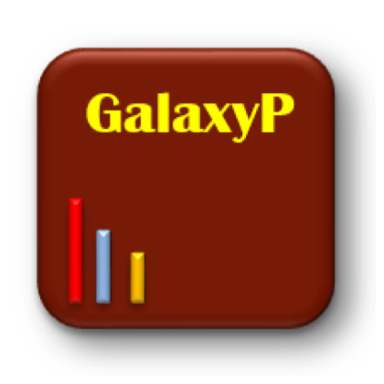

Galaxy CRAVAT-P Dockerized Demonstration

Bridging the Chromosome-Centric and Biology and Disease Human Proteome Projects:
Accessible and automated tools for interpreting biological and pathological impact of protein sequence variants detected via proteogenomics